How was your way here, today? By car, on foot, by bus or train — you may have noticed something along the way that caught your attention.
Final project · Iddo Naim · 2025–26
Studio: Arch. Yoram Shilo · Thesis advisor: Dr. Arch. Dikla Yizhar
Azrieli School of Architecture, Tel Aviv University
↓
1/6 · WHAT THE SYSTEM IS FOR
The Reading
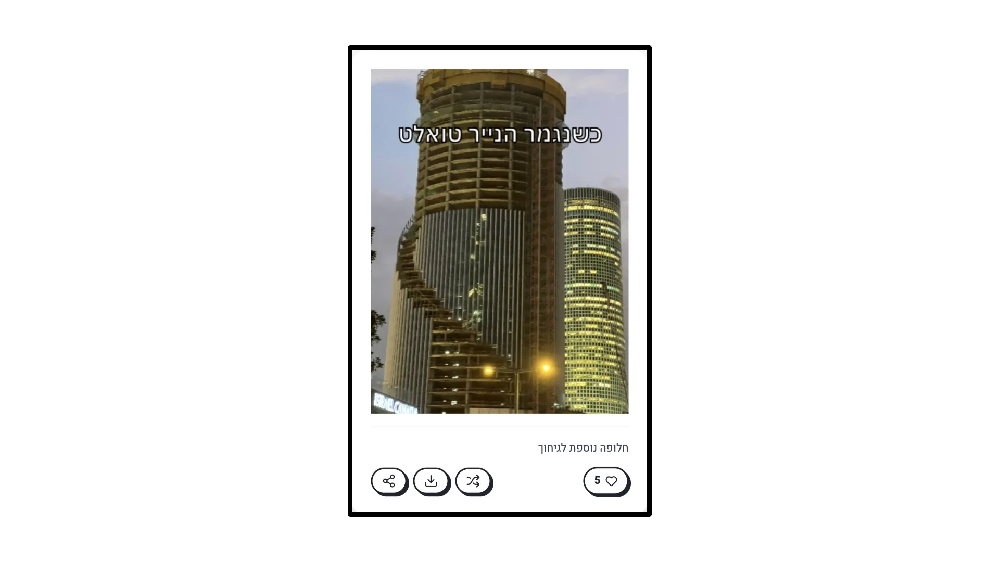
The toilet-roll towers — a meme from the platform
The moment you read the meme — you read the place. Our interpretations of where we live travel through countless channels today, and the meme is one of the fastest and most precise among them: it doesn't just add another data point about a place — it connects things that weren't necessarily related before, and in that connection a new reading of space is revealed. In that personal reaction, I believe, lies real value for design.
Out of this came the project's questions. In plain words: can memes be used as design tools? What is the architect's role in such a system — and what is the role of the memetic pattern?
How can a memetic-adaptive framework be established — one that enables a re-reading of existing spaces through humor and through principles of participation and circulation — while preserving enough room for action to create a multi-dimensional architecture that keeps changing and staying relevant over time?
To test the question, two instruments were built. Both live online:
The two instruments and the relationships between them: user · architect · platform · studio
But… why memes, of all things? We know the meme as "funny pictures on the internet," yet a meme is far more than that: a cultural pattern passed between generations — MEME = CULTURAL GENE, as Dawkins coined it in 1976. The pattern may change from one generation to the next, but it always keeps enough of its identity to remain itself — and for us to recognize the kinship between its appearances. The meme persists adaptively, through continuous change: a familiar pattern, a new context, a shifting image — and onward circulation.
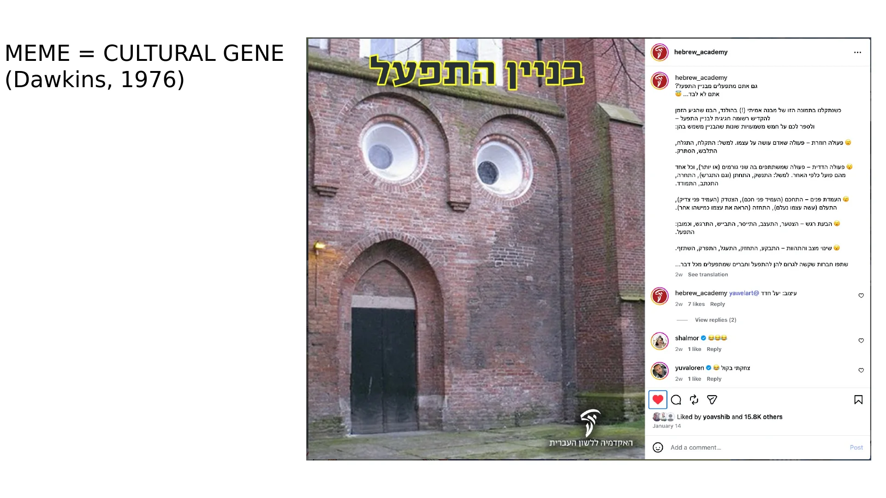
"Binyan Hitpa'el" — a Hebrew grammar pun finds its building: the memetic reading meets the street
And an inseparable part of the meme — and of this project — is humor. Humor lets us step outside our usual point of view for a moment and look at ourselves from the outside; it creates distance from the taken-for-granted and lets us see the familiar differently. In that sense, we can afford a little more humor in design and in the profession — after all, holding multiple ways of seeing is a natural, even essential, part of architectural work.
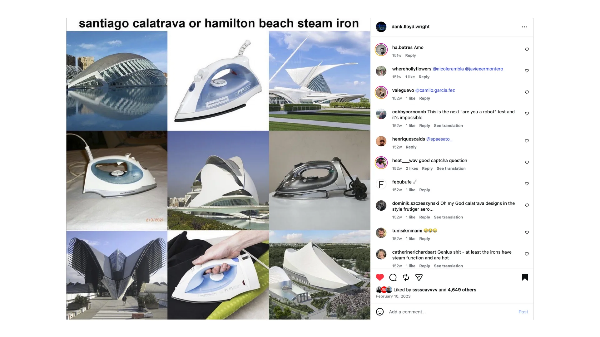
Santiago Calatrava or Hamilton Beach steam iron — humor as a reading mechanism
2/6 · PROCESS
Foundations of the System
The studio year began with a reading of Italo Calvino's Six Memos for the Next Millennium. Calvino chose concepts to carry into the coming millennium, and would unpack each into contexts and relationships with its counter-concepts — and out of that work with word-pairs emerged the pair that accompanied the entire project:
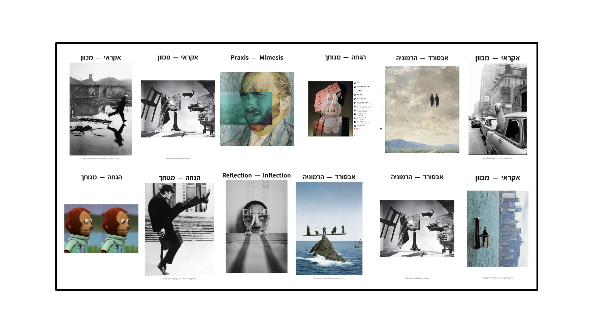
The word pairs — from the studio work
Absurd — Harmony.
Harmony is an expression of the fitting way things join: it reveals relationships and contexts and lets them carry shared meaning. The absurd is the gap that appears when we go looking for that meaning — the moment when something that seemed self-evident suddenly asks to be seen from another direction. The pair lives in constant back-and-forth motion: joining, assembly, rupture, disassembly — and around again.
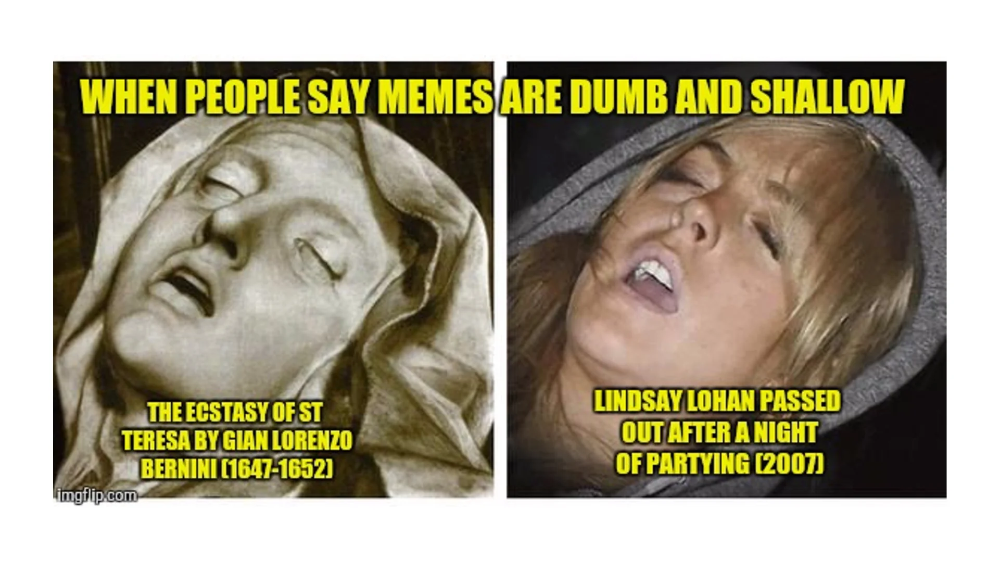
The Ecstasy of St Teresa (1652) / Lindsay Lohan (2007) — the meme moves through the same motion
Speaking of memes and harmony: one can think of the classical canon itself as a meme — just a slow one. Very slow. The classical orders and ancient proportions traveled across cultures and eras, taking on new appearances and meanings each time — and remained recognizable throughout. Today's meme has moved to the internet and reached a dizzying pace, crossing borders and cultures; and the internet has classics of its own.
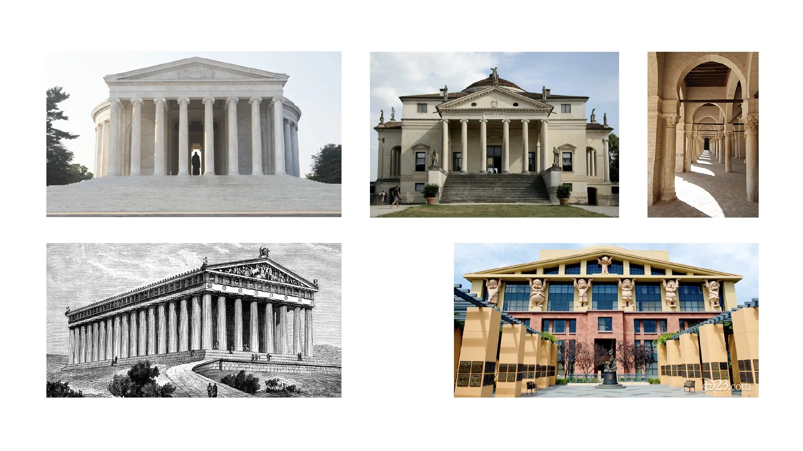
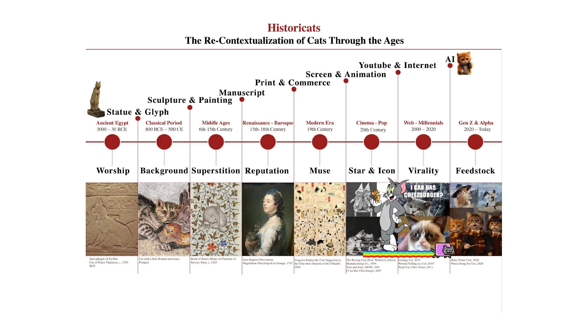
Cats are internet classicism at its finest — and a small agent of chaos that accompanied the project as its natural context-breaker, elegantly. So when we were asked to choose an image for the word-pair, nothing seemed more fitting than cats on Escher: the structure that looks impossible, that unsettles everything we know, becomes — for the cat — a perfectly legitimate place to climb. Humor produces another spatial reading here.
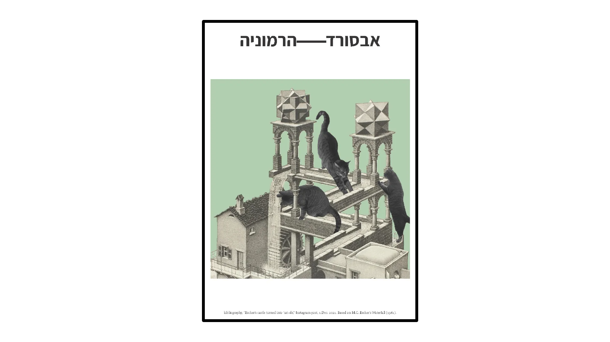
From there it was a short way to cats on Escher — on the Moon, and soon the classics of animation received some unexpected guests too. Each time, the same operation repeats: a familiar pattern meets something foreign from outside, and the encounter produces a new possibility of reading.
field-00 — the landingfield-01 — guests in the classic animation
The cats were a first experiment in how a change of context changes a reading. The next step: could the operation itself become an architectural language? From one cube and eight cutting solids — four chosen each time — seventy variations emerge: C(8,4)=70. The seventy solids are the system's fixed vocabulary, a kind of alphabet; add joining rules — faces cut by identical solids connect to each other — and the potential for a shared language appears.
The cube and the cutters — the birth of the vocabulary
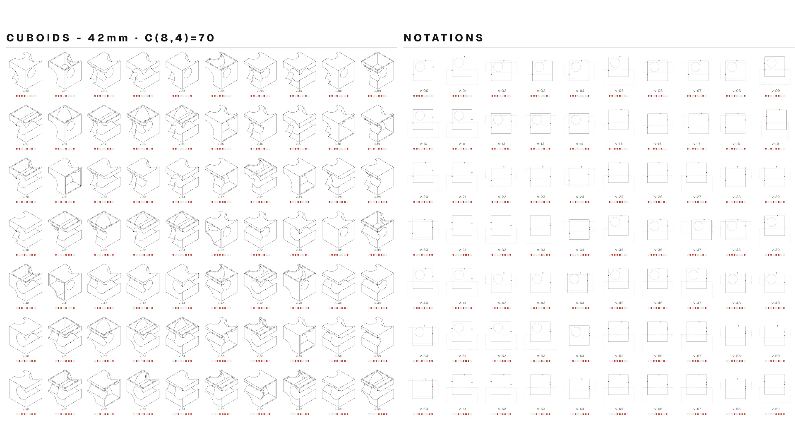
CUBOIDS · 42mm · C(8,4)=70 — the seventy variations and their notations
And once there is potential for a shared language — the work of translation can begin.
3/6 · THE TRANSLATION SYSTEM
The Translation
To move from the cube vocabulary to architectural action, very different kinds of knowledge have to be mediated — something must bridge the gap to the memes and the place, and to the speed at which they live. This is where the large language model (LLM) comes in: a statistical-computational model trained on vast amounts of text, and through them exposed to an enormous space of cultural associations. Within the system it serves as "the Interpreter" — a semantic interface.
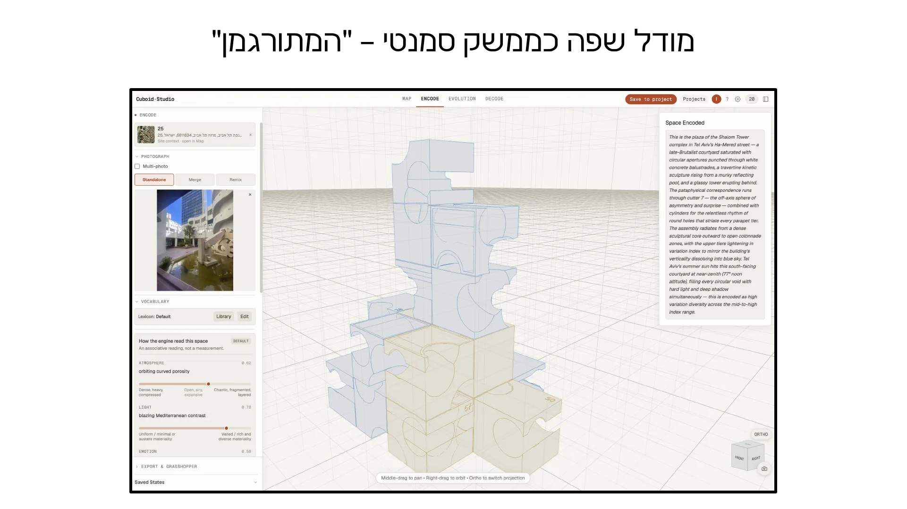
A language model as semantic interface — "the Interpreter"
The language model receives the site's context, the memes themselves, and the language the system supplies; it performs a reading and proposes ways to phrase those relationships within the geometric language. This happens through a prompt binding the lexicon — the units the system works with — to the grammar defining the possible relationships and operations between them. The system holds two prompts, and both are open to user editing. Alongside the model runs plain deterministic code, executing the geometric operations and keeping the state of the assembly. And in the end — facing the language model and the machine — it is the user-designer who defines the language of action, edits the proposals, chooses, and decides how to continue.
The translation itself passes through five stages:
MAP
Begin from an existing place — a physical site. The system pulls a map, GIS data, plans, photographs and other layers of information, and lets you choose the point of view from which to approach the site.
DE-CONTEXTUALIZECUT
The place is separated from its physical context, based on the relationships we identify within it.
VIRTUALIZE
The reading becomes a field of possibilities — it receives a representation inside the system's language and can materialize in different appearances.
MEMEFY
The moment the memes intervene: the memetic pattern meets the system and introduces a disruption, a change, or a new relationship.
RE-CONTEXTUALIZE
The assembly returns to the place, the site, the plan — and from there, through the diagram, connects onward into the design process.
The five stages map onto four modes in the system itself: MAP · ENCODE · EVOLUTION · DECODE.
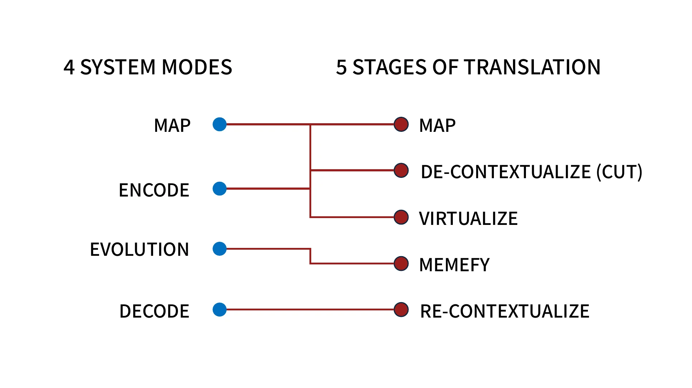
And this is how it works in practice:
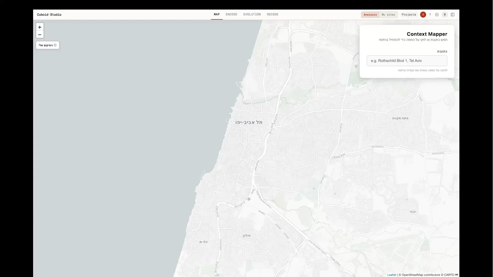
The full demo — Cuboid Studio: Map → Encode → Evolution → Decode (4:39, Hebrew interface)
In Map, the site and its active context are defined. In Encode, an image from the site is chosen, and the language model reads it through the lexicon and grammar — the reading rests on five axes: atmosphere, light, feeling, rhythm and structure, each with its reasoning, and it can be accepted, edited or rejected. In Evolution, the meme enters as the mechanism that adds a new factor: the system reads it in two passes — first an analysis of the meme itself, then in relation to the existing state — and proposes possibilities; the decision remains architectural. And in Decode — re-contextualization: the composition receives a two-dimensional representation drawn from the same geometric language. If the cubes were letters, these marks can be thought of as musical notes. The result is a diagram that can be read, edited, critiqued — and continued from.
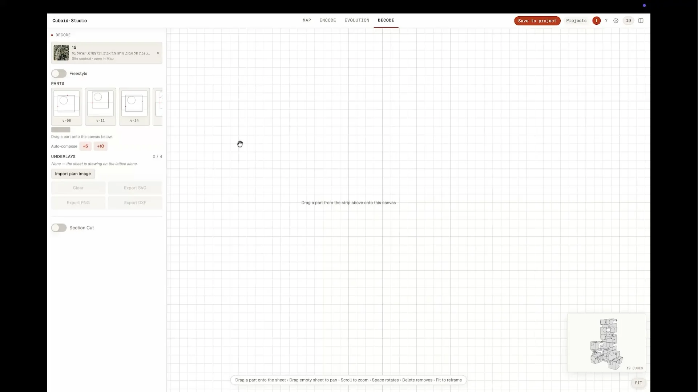
Decode — the assembly returns as two-dimensional marks on a sheet
In Decode, every unit in the assembly — together with the changes chosen in Evolution — receives a two-dimensional glyph from the same geometric language. The notation is the two-dimensional reading of the active assembly, and it can be placed in relation to a plan, a photograph, or any other representation of the site: the marks, the relationships and the composition all remain editable. The result is a sheet that can be read, critiqued, and continued from.
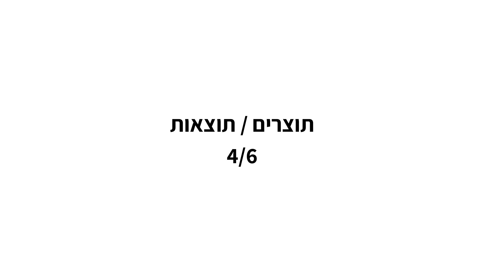
The notation over the plan
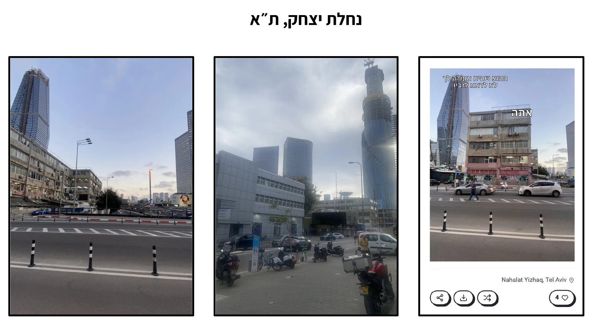
The notation over the aerial photograph
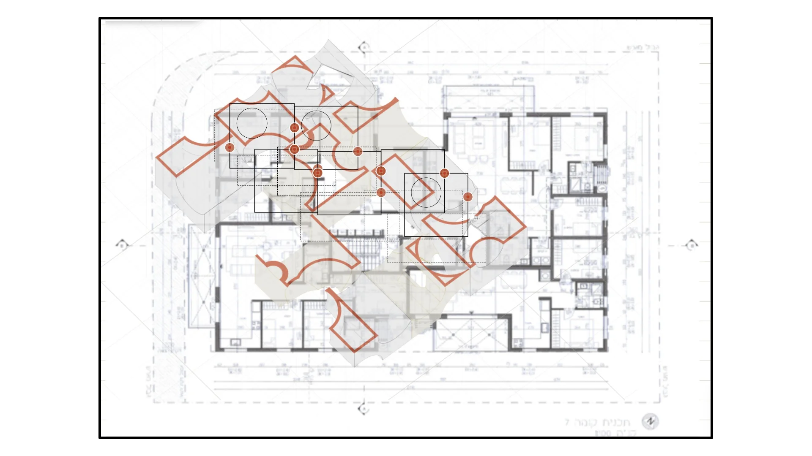
The same assembly, over the floor plan — a starting point for further design, not a final solution
4/6 · OUTPUTS
Nahalat Yitzhak and the System Section
Nahalat Yitzhak, Tel Aviv, is where the method was tested as a continuation of design. It is the point where the Bursa's towers meet the old streets: high-rises climbing above a street of garages and workshops, a corner everyone passes through and few stop in. The process begins from existing readings of the place and the ways they appear to the people who experience it — the photograph, the site, and the memes hung upon it. The readings enter the system, receive a response, and consolidate into a sheet that shows what was read, what was translated, which changes were accepted and why.
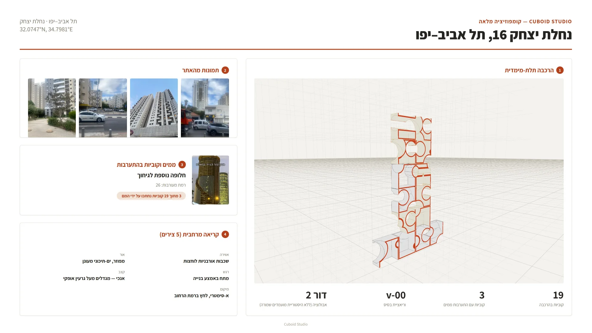
The decision sheet — 16 Nahalat Yitzhak St.: images from the site · the memes that intervened · a spatial reading · the assembly · 19 cubes, 3 memes, generation 2
The System Section — who does what
Everything we just saw can also be read as a system section. Just as an architectural section reveals relationships the façade conceals, the system section reveals who feeds in material, who reads, who proposes, who executes and who decides. The site, the GIS data and the participants supply sources of different kinds. The language model proposes a semantic reading and a translation within the lexicon and grammar. The code executes the geometric operations and keeps the assembly's state. The architect defines the language of action, edits the proposals, and rules on which of them enter the active state — the human Apply is the system's point of commitment.
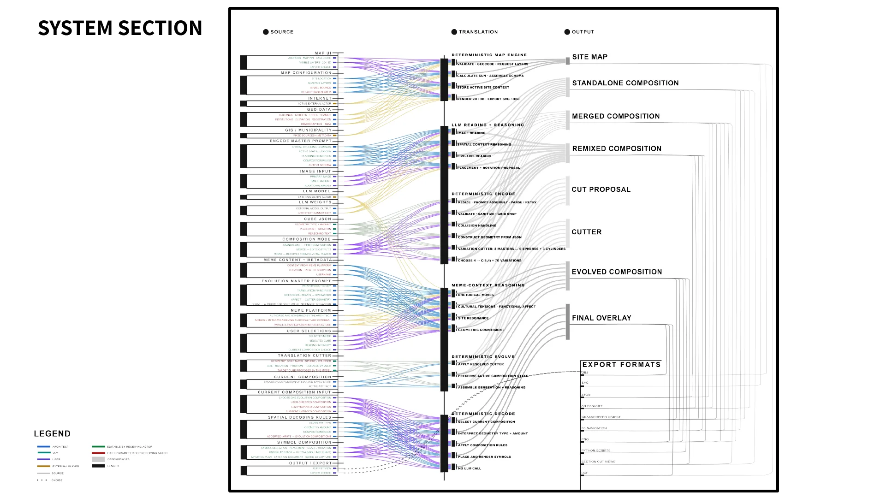
SYSTEM SECTION — sources · translation · outputs: every line is a crossing that can be traced
Along the whole sequence a trace is kept: which source a reading came from, what proposal was generated, what changed, what was chosen and what became part of the assembly. The section displays this distribution of authority — and the possibility of critiquing the translation after it has taken place.
5/6 · THEORETICAL FOUNDATIONS
Who Gave the System Its Operations
Here the conversion problem appears. The meme operates in a cultural space of images, texts and contexts; the design process operates in other spaces of representation — maps, models, diagrams, plans and decisions. For the memetic reading to take part in design, the relationships it carries must cross into a representational space where work can continue. Each of the following sources defined an operation the system had to know how to perform.
AristotlePoetics · Mimesis
To read. Mimesis is an act of representation, selection and arrangement: certain relationships take form and something becomes legible. The system selects and arranges the relationships read in the meme and gives them a new representation. Comedy, in Aristotle, uses the ridiculous and the incongruous to locate a gap. And from here, the name: Poetics → Peh (Hebrew for "mouth") + Ethics → פה־אתיקה → POETIKS.
Simon CritchleyOn Humour, 2002
To spot a gap. Humor creates the distance that lets us see ourselves from outside and critique the taken-for-granted. The joke tears a hole in our expectation of the world — and through that hole appears the pattern we had stopped seeing.
Bernard TschumiManhattan Transcripts, 1981
To translate a relationship. The disjunction between space, event and movement becomes, in Tschumi, architectural material. So when a meme reads an entrance as a barrier, a corridor as a meeting place, or an empty lot as a programmatic opportunity — it is pointing at a relationship that can be translated into spatial action.
Jeremy TillArchitecture Depends, 2009
To hold the mess. Till widens the working material to the mess of people, time, politics and use. The multiplicity of readings is part of the context within which design operates — not noise to be filtered out.
Gilles DeleuzeDifference and Repetition, 1968
To hold possibilities. The virtual is a fully real field of possibilities that have not yet been actualized in a particular form. A meme pattern exists through its changing appearances; a diagram holds relationships that can materialize in different ways. The assembly in Cuboid Studio is such a field. Everything changes — and nothing changes.
Dawkins · ShifmanThe Selfish Gene, 1976 · Memes in Digital Culture, 2013
To produce variations. The meme as a family generated through change, remix and participation: pattern, variation, circulation. The single appearance is not the unit — the relationship between appearances is.
Mario CarpoThe Second Digital Turn, 2017
To enable decision. In the second digital turn, designing the process matters more than designing the object. The designer also designs a system: a vocabulary, assembly rules and points of decision. In that sense — the prompt is a design document.
Translation always involves choice: what carries weight, what is kept, what changes and what is lost. The system therefore preserves the source, the reading, the proposal, the change and the decision — so the passage between cultural language, geometric language and architectural diagram can be followed.
“The Virtual is fully real in so far as it is virtual.” “The task of life is to make all these repetitions coexist in a space in which difference is disturbed.”Gilles Deleuze, Difference and Repetition, 1968
“Architecture is not simply about space and form, but also about event, action and what happens in space.”Bernard Tschumi, Manhattan Transcripts, 1981
“Mess is the Law.”Jeremy Till, Architecture Depends, 2009
“Jokes tear holes in our usual predictions about the empirical world. We might say that humour is produced by a disjunction … between expectation and actuality.”Simon Critchley, On Humour, 2002
“In the second digital turn, the design of processes matters more than the design of objects.”Mario Carpo, The Second Digital Turn, 2017
“Instead of saying ‘I had a bad date and I feel miserable and lonely,’ one can simply paste the ‘Forever Alone’ character.”Limor Shifman, Memes in Digital Culture, 2013
6/6 · SUMMARY
What Changes for Architecture
Memes become a layer of context
Humor, association, critique, cultural memory and unexpected use join sun, wind, movement, regulation and existing programs. The conversion between representational spaces lets these readings take their place inside the design process.
Critique gains an operation inside the system
One can ask which gap a meme identifies, and which relationship it inverts, amplifies or shifts. The reading acts on the assembly and produces possibilities that can be compared, chosen and developed.
Translation becomes something that can be traced
The source, the reading, the language model's proposal, the computational operation and the human decision are kept as a sequence. The values driving the design find expression in the lexicon, the grammar, the prompt and the decision points — and the designer can critique both the result and the path that led to it.
And to return to the way you arrived here: the project began with the question of how the ways people see the city, talk about it and laugh about it could enter its design. Over the year, the way passed between these spaces — from the cats and the physical models, through the meme platform, to the language model and the computational system. At every stage the same question returned: how does a cultural reading become material you can build with, without losing the ability to see where it came from and how it changed.
POETIKS is a proposal for a way of working: a platform where cultural readings surface, a translation regime that tracks what was chosen, changed and lost, a geometric language that holds relationships, and tools for examining, disassembling, reassembling and continuing. People already use space, interpret it and tell stories about it; memes are part of those stories. If architecture is becoming computational, then its context, its critique and its cultural interpretation deserve computational tools as well. The tools widen the space of reading and action; the architectural decision remains ours.